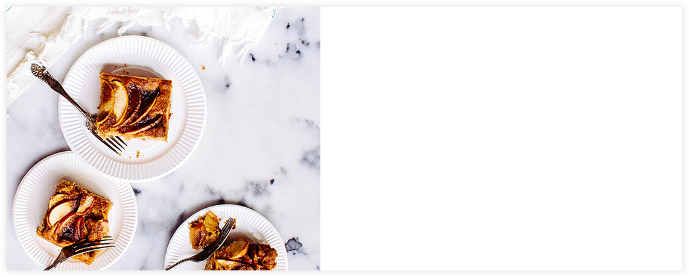
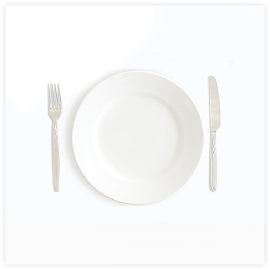

If you're looking for decadence, look no further — you've found the Holy Drail of desserts. Honestly, this cake makes us wonder why Bananas Foter hasn't always been served on top of ice cream cake
Raspberry & Cream Frozen Yogurt Pie

Giant Ice Cream Sandwich

Dark Chocolate Crunch Ice Cream Sandwich Cake
SAVE RECIPE
1 (8 ounce) container frozen whipped topping, thawed 20 chocolate round wafers, divided 1 (7 1/4 ounce) bottle Smucker's® Hot Dark Chocolate Microwaveable Topping, divided DirectionsARRANGE 8 to 9 ice cream sandwiches in 9-inch square pan, cutting to form an even layer. Spread with half of whipped topping. Break or crush chocolate wafers and sprinkle over the whipped cream. Microwave 1 cup of chocolate topping into small microwave-safe bowl on HIGH for 30 seconds. Drizzle evenly over wafers. TOP with remaining 8 to 9 ice cream sandwiches to form an even layer. Spread with remaining whipped topping. Freeze 3 hours or overnight. Remove from freezer 10 minutes before serving. Cut into squares.HEAT remaining topping. Drizzle each serving with topping. Sprinkle with decorator sprinkles.Nutritional information (amount per servings): Total Calories: 640. Sodium 440mg. Fat: 32g. Carbohydrates: 82g. Cholesterol: 40mg. Protein: 11g. Fiber: 1g.վ
WE COULDNT FIND THE PAGE

United States
Over the fifteen-year life span of Food.com, we've learned that – in addition to eating – sharing is what you do best. And thanks to the 20 million of you who come here each month, we now have 500,000 recipes to show for it, more than anywhere else in the digital universe. We also have tons crazy-tempting photos, troves of recipe reviews and more than 2 million Facebook likes. That's a heck of a lot of Food. Thank you!